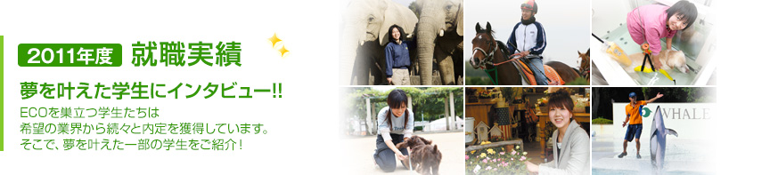
これからそれぞれの業界でプロとしての活躍を期待して下さい！
- 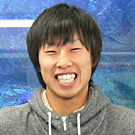京都水族館
【飼育員】
ドルフィントレーナー専攻2年生
織田 さん
大阪府立刀根山高等学校出身
中学生のころから水族館で働きたくて高校1年のときにECOを知り入学しました。 京都水族館は新しい水族館なので事前の就職対策が出来なかったですが高校時代にラグビーをしていたのでスポーツマンらしさをアピールしてやる気を伝えました。
これからはドルフィンショーを頑張りたいです。
そしてお客さんを楽しませるショーがしたいです。 - 京都水族館
【飼育員】
ドルフィントレーナー専攻2年生
濱田 さん
大阪府立大塚高等学校出身
須磨水族館の研修でお世話になったECOの先輩が京都水族館に転職していて、出会えて嬉しかったです。
就職活動では「観光地京都で多くの客さんに動物と触れ合ってもらって笑顔にしたい」と自分の考えをしっかりアピールできたと思います。
飼育員は裏方仕事が多くなるとは思いますが、お客さんの前に出て多くの人を楽しませたいです。
- 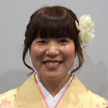愛媛県立とべ動物園
【動物飼育員】
動物園動物飼育専攻2年生
寺岡 さん
愛媛県立伊予高等学校出身
幼い頃からとべ動物園にはよく遊びに行っており、高校時代にはふれあい体験に参加したことで、すごく楽しく、「私はここで動物飼育になる！」と決意しました。 業界研修でお世話になった時も、お仕事が楽しくて仕方なく、毎日が充実していました。 今後は、まだ誰も成功させていないゆりかもめの人工保育を成功させたいです！ - 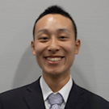ノーザンファーム
【厩務員】
動物園動物飼育専攻2年生
野尻 さん
京都市立洛陽工業高等学校出身
私は以前一度社会に出てものづくりをしていました。しかし、動物に関わるお仕事もあきらめきれず、ECOに入学しました。学んでいく中で、馬に関わるお仕事に特に魅力を感じ、厩務員を目指しました。今研修として内定先とは異なる施設で経験を積んでいますが、毎日が楽しく充実しています。
今後は厩務員としてだけではなく、人として成長し、馬主さんからも信頼されるような厩務員になりたいです。 - 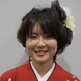株式会社星野リゾート・八ヶ岳
【ホテルスタッフ】
動物園動物飼育専攻2年生
谷口 さん
滋賀県立八幡商業高等学校出身
合同企業説明会でお話を聞いた際、動物だけではなく、自然に囲まれ、自然とふれあいながらお仕事ができるこの施設にとても興味をもち、業界研修に参加させて頂きました。
研修中はさまざまさイベントの企画運営に携わり、お客様や子供たちの笑顔とスタッフの方々の意欲に感動しました。
今後は沖縄にある同じグループの施設で、海やアクティビティのお仕事もしてみたいと思っています。 - 名古屋港水族館
【海獣飼育・トレーナー】
ドルフィントレーナー専攻2年生
山本 さん
兵庫県立御影高等学校出身
高校の夏休みに「もう一度空へ」という本を読んだことがきっか けで、動物に関わるお仕事を本気で目指すようになりました。
ECOでは１０週間の専門留学にも参加し、オーストラリアのシーワールドでショーデビューも果たすことができたの で、とっても良い経験ができました。
今後は、海外で学んだことを活かし、より良いショーを作り上げられるようにがんばります！
- 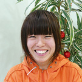姫路セントラルパーク
【動物飼育員】
動物園・動物飼育専攻2年生
薗田 さん
滋賀県立玉川高等学校出身
小６の時に飼育していたチャボが病気になり「助けてあげたい」と思ったことが きっかけで、動物に関わるお仕事を目指すようになりました。
これからは今できることを一生懸命取り組み、先輩から信頼される飼育員になりたいです。
そして、生態系や絶滅危惧種など、動物に関わる問題をお客様に伝えて、少しでも関心を持って頂けたらいいなと思っています。 - ペットホテル トマール
【ペットトリマー】
ドッグマスター専攻3年生
板野 さん
岡山県立岡山東商業高等学校出身
子供の頃からわんちゃんと二人きりになることが多く、将来はわんちゃんと人を つなぐ仕事をしたいと思っていました。
トリマーとして採用して頂たので、技術を磨くことはもちろん、 私がドッグトレーナーとしてしつけ教室をひらきたいと考えています。最近は太り気味のわんちゃんが増えているので、わんちゃんのダイエットトレーニングもしてみたいです！ - 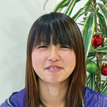（株）白鳥どうぶつ園
【動物飼育員】
動物園・動物飼育専攻2年生
松川 さん
初芝立命館高等学校出身
研修中は指示に対してなかなか効率よく動くことができず、悔しい思いをしましたが、結果的にあきらめずに仕事に取り組んでいた姿勢を評価して頂くことができました。
これから私はハリスホークの調教を任せて頂ける予定なので、見て頂いたお客様を笑顔にできるようなショーをしたいです！。 - Can＆Lee
【ペットトリマー】
ペットトリマー専攻2年生
小茂池 さん
大阪府立長尾高等学校出身
昔からわんちゃんが大好きで、色んなわんちゃんをおしゃれにキレイにしてあげたいと思い、ペットトリマーをめざしました。研修中には看板犬のトリミングを任せて頂きましたが、イヤがられてしまって大変でした（涙）内定を頂くことができ、仕事に対して今まで以上に「頑張ろう！」という想いが強くなったので、これからトリミングの技術を磨き、どんなわんちゃんでも扱えるように頑張ります！ - 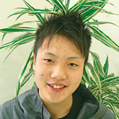大分マリーンパレスうみたまご
【海獣飼育員】
水族館・アクアリスト専攻２年生
山田 さん
三重県立四日市農芸高等学校出身
幼いころ家族で行った名古屋港水族館や鳥羽水族館で生き物が雄大に泳いでいる姿をみて感じた感動をたくさんの人に知ってほしい、伝えたいと強く思い、水族館で働くことを目指していました。これからは、飼育員としてだけではなく、人間としても成長していきたいです。そして、しんどいことがあっても笑顔で乗り切ってこのお仕事を続けていきたいと思います。 - 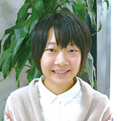ペットワールド アミーゴ
【ショップスタッフ】
ドッグカフェ専攻3年生
森田 さん
兵庫県立三田西陵高等学校出身
業界研修中は言われたことだけではなく自分で考えて積極的に行動したことで、スタッフの方々から良い評価を頂くことができました。
今後はECOで学んだ「ホリスティックケア」等の知識を活かし、飼い主さんに気軽に相談して頂けるようなスタッフになることで、ペットに関わる悩みや問題を一緒に解決していきたいです！ - （株）ボストン ボストンケンネル本店
【トリマー&ショップスタッフ】
ドッグマスター専攻3年生
青井 さん
大阪府立大和川高等学校出身
元々人見知りで話すことは得意ではありませんでしたが、ECOでエコサークルに所属し、色々な人と関わる機会が増え、自分からも積極的に友達作りをしていました。このことで、コミュニケーション力がアップし、業界研修中もスタッフの方々とお話する際活かすことができました。今後はもっと人と関わり、お店のイベントの企画や運営にも携わりたいと思っています！！ - 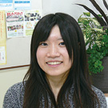大洗水族館
【魚類飼育】
水族館・アクアリスト専攻2年生
山本 さん
石川県立小松明峰高等学校出身
子供の頃、水族館で魚が群れで泳いでいるのを見て、とても神秘的で感動しました。それ以来水族館は素敵な場所だなと感じていました。ECOに入学してからも、水族館で働くことなんて夢のまた夢だと思っていましたが、実際に内定を頂くことができて本当にうれしいです！内定先では、来て下さった方々に感動して頂けるよう、お魚の魅力、水族館の魅力を水中ショーを通じて伝えていきたいです！ - 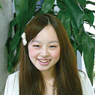Dog&Catサロンはなこ 東灘店
【ペットトリマー】
ペットトリマー専攻2年生
是川 さん
兵庫県立明石清水高等学校出身
業界研修中、トリミングの技術はまだまだ未熟なので、自分が絶対にできるあいさつや素早い返事、行動、そして掃除や準備を一生懸命がんばりました。また、「ここで働きたい！」という気持ちを精一杯アピールしました。これからも向上心を持って、自分がきれいにしたわんちゃんを見た飼い主さんを笑顔にできるように頑張ります！
- ひごペットフレンドリー
【ペットトリマー】
ペットトリマー専攻2年生
竹内 さん
三重県立名張高等学校出身
ECOのトリミングコンテストで、私の技術を見て下さった内定先の方からお声がけ頂き、受験した結果内定を頂くことができました。中学生の時、ペットサロンへ職場体験に行って以来、トリマーというお仕事に憧れ、目指し続けてきました。「人に見られている」ということを常に意識し、飼い主さんが不安にならないようなわんちゃんの扱い方を心がけ、今後お店に貢献していきたいと思います。そして飼い主さんに、良いアドバイスや提案ができるように頑張ります！ - 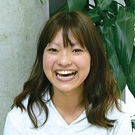いしづか動物病院
【動物看護師】
動物看護福祉専攻3年生
黒川 さん
大阪府立和泉高等学校出身
私が生まれた時からわんちゃんがそばにいて、わんちゃんが家族であり生活の一部となっていました。そして、自然に「将来は動物や人の役に立てるお仕事に就きたい」と思うようになっていました。実際社会に出て働くことに少し不安はありますが、病院に来て下さるペットや飼い主さんを元気にしたり、命を救うお手伝いをしたいです！ - スターライトステーブルス
【動物飼育員】
動物園・動物飼育専攻2年生
菅原 さん
私立八洲学園高等学校出身
業界研修中は、次何をすべきかを自分で考えて動きました。
今まで苦労することもたくさんありましたが、あきらめずに努力し たことで今夢を叶えることができたのだと思います。これからは 動物飼育員としてお客様を元気にしたり楽しんで頂けるサービスが できるように頑張ります！
- わん子ん家ひまわり保育園
【ドッグトレーナー】
ドッグマスター専攻3年生
小西 さん
大阪府立河南高等学校出身
就職活動中、自分が進むべき道を決めかねていた時期がありました。
内定先に業界研修に行ったことで、わんちゃんと一緒に自分も楽しめるお仕 事はドッグトレーナーだけたと感じることができました。これから、 お仕事の進め方やイベントなどについて、どんどん新しいアイデアを だしてより良いお店づくりに貢献したいです。  茨城県大洗水族館
茨城県大洗水族館
【ドルフィントレーナー】
ドルフィントレーナー 専攻2年生
合田 さん
京都府立北稜高等学校出身
私は1歳の頃から水泳を、小学校2年生からはシンクロを本格的に始め、高校時代には国体にも出場しています。そのため、内定を頂けたポイントの中でも特に水泳の技術や根性は評価して頂けたと思います。ただ、今は人前で堂々と話すことが少し苦手なので、これから立派なMCができるように頑張りたいです！！
- 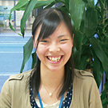大山トム・ソーヤ牧場
【動物飼育員】
動物園・ 動物飼育専攻2年生
佐藤 さん
鳥取県立鳥取東高等学校出身
小学校の時に地元に移動動物園が来たことがきっかけで動物が大好きになり、将来は動物園で働きたいという夢をもちました。業界研修では自分にまだまだ知識が足りないことを実感したので、これからたくさんの知識と自分だけの強みを身に付け、お客様に動物の魅力を伝えていきたいです。 - 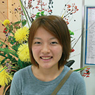ワイルドガーデン ぷらすわん
【ペットトリマー】
ペットトリマー専攻2年生
村上 さん
大阪府立芥川高等学校出身
内定先は、ドッグランがある施設なので、大型犬のグルーミングをすることがありました。研修中に、力のある大型犬の対応はコントロールが難しいので、少し苦労しました。これから、まだまだマスターしなくてはいけないことも多いですが、楽しんで仕事に取り組み、成長できるように頑張ります。 - 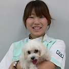ふくだ動物病院
【動物看護師】
動物看護福祉専攻3年生
吉岡 さん
大阪府立鳳高等学校出身
明るく笑顔で積極性を持ち実習に望みました。誰よりも先に患者さんに、大きな声でハキハキと接する元気な所を評価してもらえて内定をいただきました。幼稚園の時に抱いた「動物のお医者さんになりたい」という思いは15年間変わらず、動物病院で働くという長年の夢が叶い、とても嬉しいです。 - 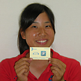株式会社オキナワマリンリサーチセンター
【ドルフィントレーナー】
ドルフィントレーナー専攻2年生
松本 さん
仁川学院高等学校出身
採用試験で特技を披露する場面があり、一発芸としてイルカとウミガメの呼吸の違いを実演した所、面接官にウケました（笑）。もちろん12年間続けている水泳も評価いただいたと思いますが、始終笑顔で臨んでいた事が良かった、と後日聞きました。小学生からの夢が叶って10月から勤務開始となるので楽しみです。 - 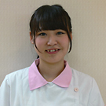モンプチ シュシュ
【ペットトリマー】
ペットトリマー専攻2年生
小久保 さん
大阪府立牧野高等学校出身
卒業生の方が店長をしているお店での研修中、言われたことだけでなく、自ら進んで仕事をするなどを心がけ積極的に行動しました。さらに明るく楽しく仕事をしていた姿を見ていただけた上に、お店との相性も合ったみたいで、内定をいただきました。今やるべきことをしっかりとやっていきたいと思います。
 姫路セントラルパーク
姫路セントラルパーク
【動物飼育員】
動物園・動物飼育専攻2年生
藤原 さん
和歌山県立紀北工業高等学校出身
業界研修中に掃除やしっかりとした挨拶と返事を心がけ、積極的に質問をしたことが評価して頂け、内定につながったのだと思います。夢が叶ったというより、今からがスタートだと思いますので、動物の気持ちを一番に考えられる飼育を目指して頑張ります。そして、ECOのガイド実習で学んだことを活かしてお客様に動物の魅力を伝えていきたいです。
- 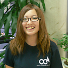清水ドッグスクール
【ドッグトレーナー】
ドッグトレーナー専攻2年生
中西 さん
滋賀県立甲西高等学校出身
業界研修中はスタッフの方々と一緒にご飯を食べることが多く、お話を盛り上げたり、気配りを常に心がけました。実際自宅でペットを飼育したことはありませんが、これから出会うワンちゃんと一緒に自分も成長していきたいと思います。
- 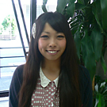南知多ビーチランド
【ドルフィントレーナー】
ドルフィントレーナー専攻2年生
田中 さん
滋賀県立北大津高等学校出身
夏休みに業界研修をさせて頂き、そこで内定を頂きました。研修中はお客様はもちろん、できるだけスタッフの方々とコミュニケーションをとるように心がけました。これから、施設の方と一緒に「日本一のショー」を作り上げれるように頑張ります！ - カフェ＆サロン Y's Rooms
【ペットトリマー＆カフェスタッフ】
ドッグマスター専攻3年生
市場谷 さん
清明学院高等学校出身
もともと求人はなかったお店ですが、業界研修を受け入れて頂きました。
研修中はやらせて頂けるお仕事は何でも一生懸命取り組みました。
その後、研修中のがむしゃらに頑張る姿勢が認められ、内定を頂くことができました。入職までに少しでも多くの技術・知識を身に付けておけるよう、残りのECOでの時間を有効に活用していきたいと思います。そして、いつか、自分でドッグカフェを開きたいです!! - 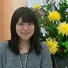（株）三芳園
【フローリスト】
フローリスト専攻2年生
岩崎 さん
大阪府立八尾北高等学校出身
面接では、丁寧な態度や言葉遣いを心がけつつ、自分の作品集を作成して見せたりして自己アピールを頑張りました。また、研修中には雑用等の任された作業をスピーディーに行ったことで、手際の良さは評価して頂けたと思います。 これから、ホテル内でのお花の装飾等を通して、日本の文化やお花の魅力をお客様に伝えていきたいです。
- 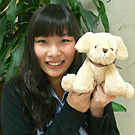ペットシティ
【ペットトリマー】
ペットトリマー専攻2年生
岡 さん
東大阪市立日新高等学校出身
面接ではとても緊張しましたが、明るくハキハキ、自然な笑顔をこころがけました。内定を頂き、トリマーとしてスタートを切れることになりましたが、まだまだこれからが頑張りの見せ所だと思うので、自分のこだわりは忘れず、成長していきたいです。いずれは自分のお店をもてたらいいなと思っています。


-

- フリーダイヤル0120-141-807
- FAX06-6536-4610
- E-mailinfo@osaka-eco.ac.jp